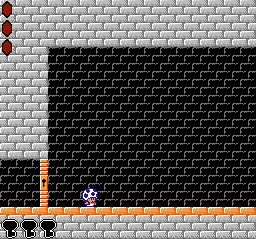
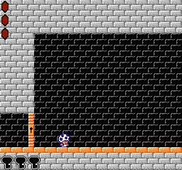
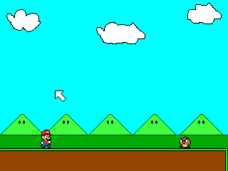
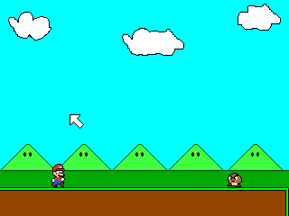

Games
A bunch of games and applications I've created.
Toad and the Ancient Keys

A short metroidvania-style game where you play as a nameless toad attempting to circumvent the defenses of an ancient temple to recover a precious treasure.
-MFGG Page-

A short metroidvania-style game where you play as a nameless toad attempting to circumvent the defenses of an ancient temple to recover a precious treasure.
-MFGG Page-
The Great Cursor Caper
 A short platformer where Mario is (slightly) controlled with the mouse.
-MFGG Page-
 A short platformer where Mario is (slightly) controlled with the mouse.
-MFGG Page-